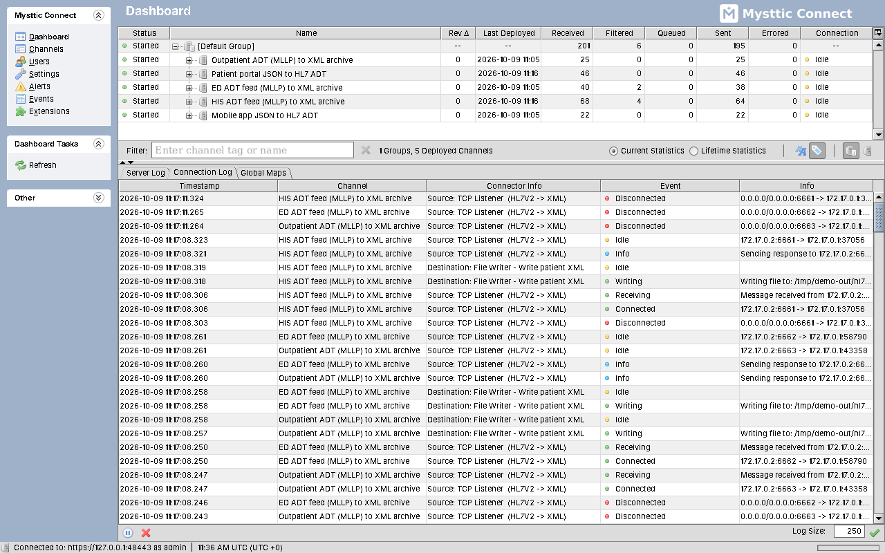
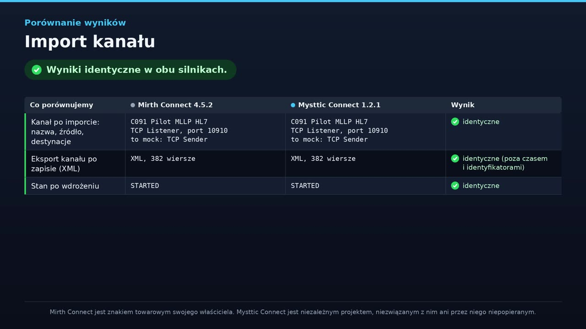
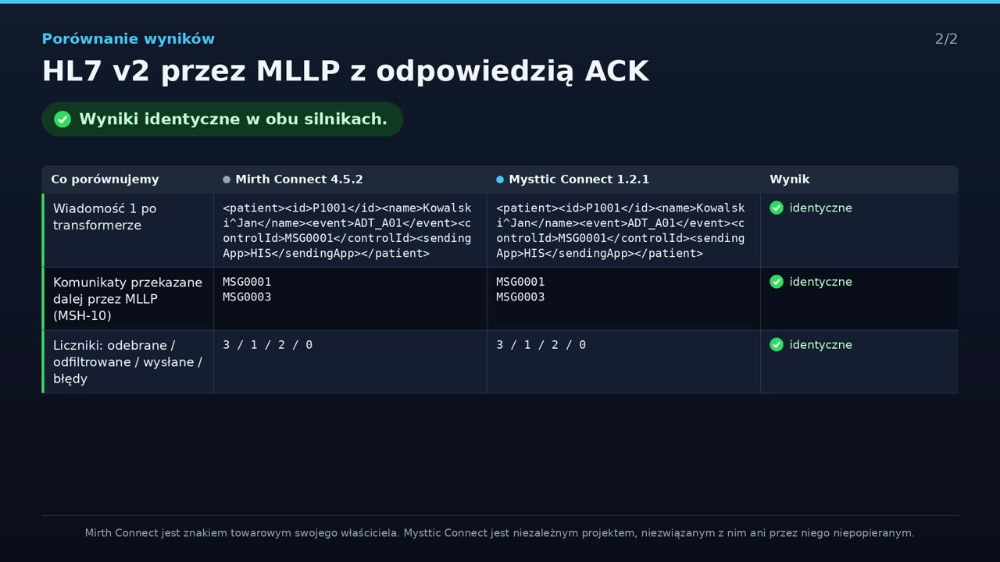
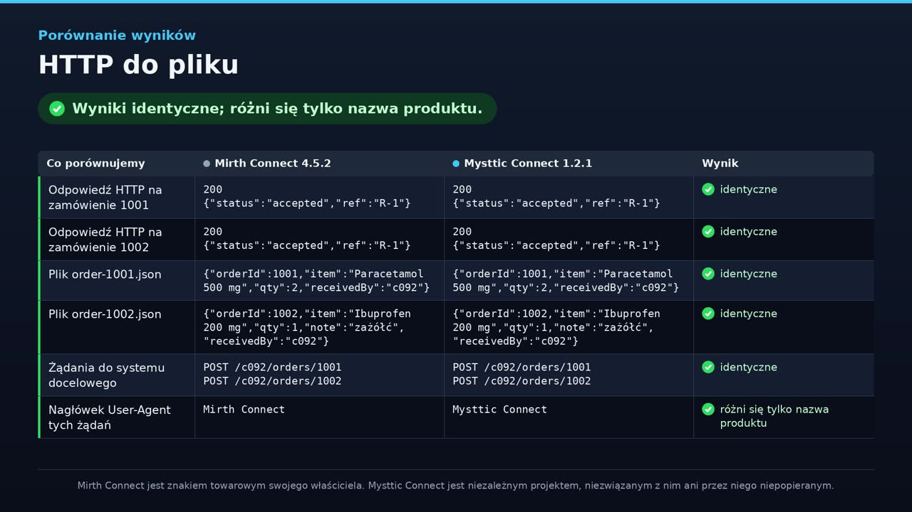
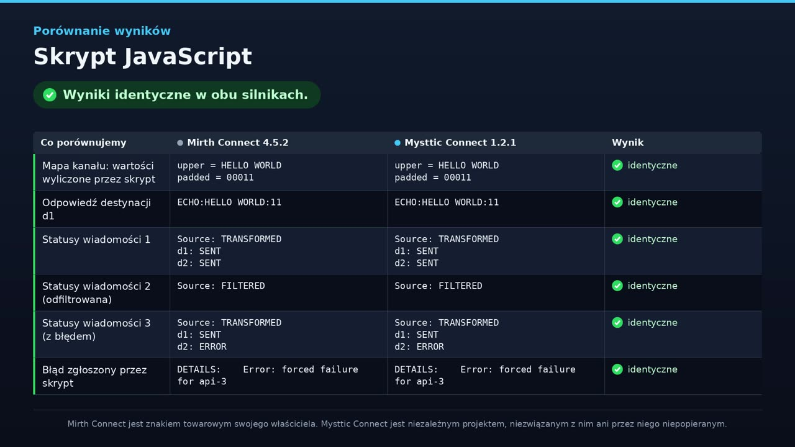
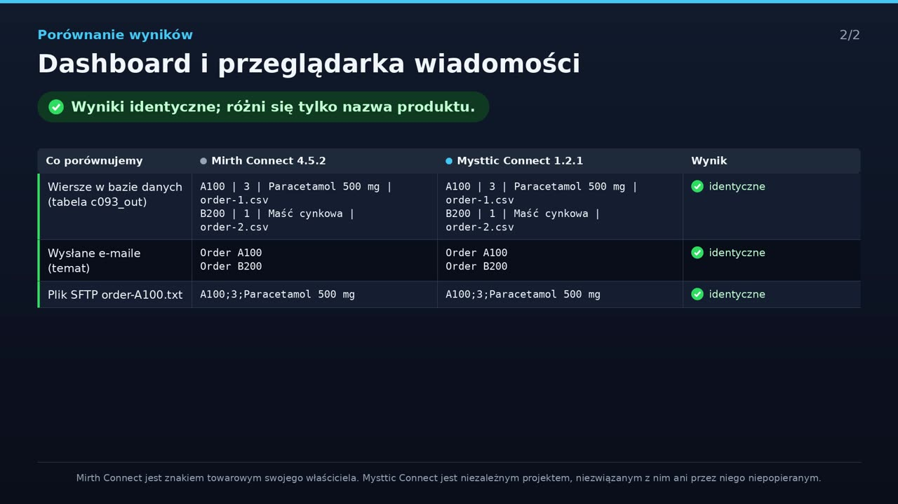

Silnik integracyjny dla ochrony zdrowia: HL7, X12, DICOM, XML i JSON, także FHIR przez HTTP. Zbudowany z kodu Mirth Connect 4.5.2 tak, jak powstało oficjalne wydanie, pod własną nazwą i z własnymi wydaniami.
Ten sam silnik co Mirth Connect 4.5.2, sprawdzony obok oryginału.

Kompletny silnik integracyjny z narzędziami do codziennej pracy: Administratorem, Server Managerem i Administrator Launcherem.
Kod Mirth Connect 4.5.2 zbudowany tą samą metodą co oficjalne wydanie, zmieniony tylko tam, gdzie pokazuje nazwę produktu. Wersja silnika to nadal 4.5.2: kanały, skrypty, szablony kodu, rozszerzenia i baza danych działają jak w oryginale.
Porównany z oficjalnym wydaniem plik po pliku i uruchomiony obok niego w 99 scenariuszach; jedyną różnicą jest nazwa produktu. Liczby i nagrania są niżej.
Okno do budowy kanałów, przeglądania komunikatów i obserwowania Dashboardu. Uruchamia je Administrator Launcher na Windows, macOS i Linuksie, z własną Javą i JavaFX.
Program w zasobniku systemowym: start i zatrzymanie usługi, porty, baza danych, logi i informacje o serwerze. Sam sprawdza, czy jest nowa wersja, i można to wyłączyć.
Bez rejestracji, statystyk użycia i powiadomień producenta. Serwer rozmawia tylko z Twoimi systemami; launcher i Server Manager pytają tę stronę o nowe wersje, i to także można wyłączyć.
Licencja Mozilla Public License 2.0. Serwer, Administrator Launcher i Server Manager wychodzą osobno, każdy ze swoim numerem, listą zmian i podpisanymi aktualizacjami.
Zanim na tej bazie powstało cokolwiek nowego, wersja podstawowa musiała działać jak oryginał. Trzy sprawdzenia to potwierdzają, a pięć nagrań pokazuje oba silniki na tych samych kanałach i komunikatach w tym samym czasie.
Zbudowany z kodu źródłowego Mirth Connect 4.5.2 tak, jak powstało oficjalne wydanie. Od tego czasu zmieniły się nazwa, usunięte usługi producenta i narzędzia wokół serwera, nie przetwarzanie komunikatów.
skompilowanych klas naszego buildu jest identycznych z oficjalnym wydaniem 4.5.2. Pozostałe 4 to metadane buildu, które różnią się także między buildami oryginału.
uruchomionych na oficjalnym Mirth Connect 4.5.2 i na Mysttic Connect: 77 identycznych, 22 różnią się wyłącznie nazwą produktu w nagłówku albo tekście. Kontrola, Mirth Connect wobec samego siebie: 99 identycznych.
Po lewej oficjalny Mirth Connect 4.5.2, po prawej Mysttic Connect 1.2.1. Oba nagrane w tej samej chwili, z tymi samymi komunikatami; napisy po polsku, bez dźwięku. Każdy klip kończy się planszą z porównaniem wyników.
Wynik każdego nagrania na jednej planszy; kliknij, żeby ją przeczytać.





Te same scenariusze na 23 slajdach: zrzuty obok siebie, tabele wyników i trzy liczby powyżej.
Pobierz PDF (1,2 MB) Także jako PowerPoint (1,1 MB)Nagrane 16 października 2026 na Mysttic Connect 1.2.1 wobec oficjalnego Mirth Connect 4.5.2 skryptem, który steruje oboma Administratorami i porównuje wyniki tak jak test automatyczny; nic nie jest poprawiane ręcznie. Mysttic Connect 1.3.0, wydanie na tej stronie, ma ten sam silnik.
Mirth Connect jest znakiem towarowym swojego właściciela. Mysttic Connect jest niezależnym projektem, niezwiązanym z właścicielem tego znaku ani przez niego niepopieranym. Lewa strona każdego nagrania pokazuje oficjalny obraz Docker Mirth Connect 4.5.2 bez zmian; widoczne na niej nazwy i logo należą do ich właścicieli.
Trzy części, każda z własnym numerem wersji: serwer, Administrator Launcher i Server Manager. Launcher i Server Manager same mówią, gdy jest nowa wersja.
Najnowsze wydanie: sprawdzanie…
Wszystko na jednym serwerze Windows: silnik z własną Javą, usługa, Server Manager, wiersz poleceń i Administrator Launcher. Aktualizuje w miejscu i zachowuje konfigurację oraz dane.
Pobierz instalatorSerwer jako katalog do rozpakowania, ze skryptami do uruchomienia samodzielnie albo jako usługa.
Pobierz dla Linuksa i macOSSHA-256 plików serwera, do sprawdzenia kopii, która przeszła przez kilka rąk.
Pobierz sumy kontrolneNajnowsze wydanie: sprawdzanie…
Pobiera Administratora z serwera Mysttic Connect i go uruchamia, z własną Javą i JavaFX. Instaluje się na każdym komputerze, na którym pracuje Administrator.
Sumy kontrolne plików launchera
Najnowsze wydanie: sprawdzanie…
Server Manager jest w zestawie z serwerem. Te pliki aktualizują go w istniejącej instalacji Mysttic Connect 1.2.0 lub nowszej i nie zmieniają serwera.
Dla serwera z instalatora Windows: podmienia Server Managera i uruchamia go ponownie.
Pobierz aktualizacjęDla serwera z paczki: do rozpakowania w katalogu instalacji.
Pobierz aktualizacjęSumy kontrolne plików Server Managera
Windows i macOS mogą poprosić o potwierdzenie pierwszego uruchomienia:
pliki nie są jeszcze podpisane certyfikatem. Instalator i launcher mają
własną Javę 17; paczki .tar.gz i .zip wymagają
64-bitowej Javy 8 lub nowszej.